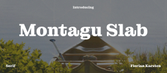
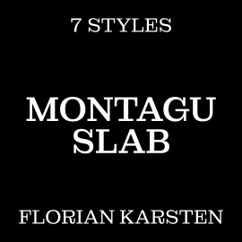
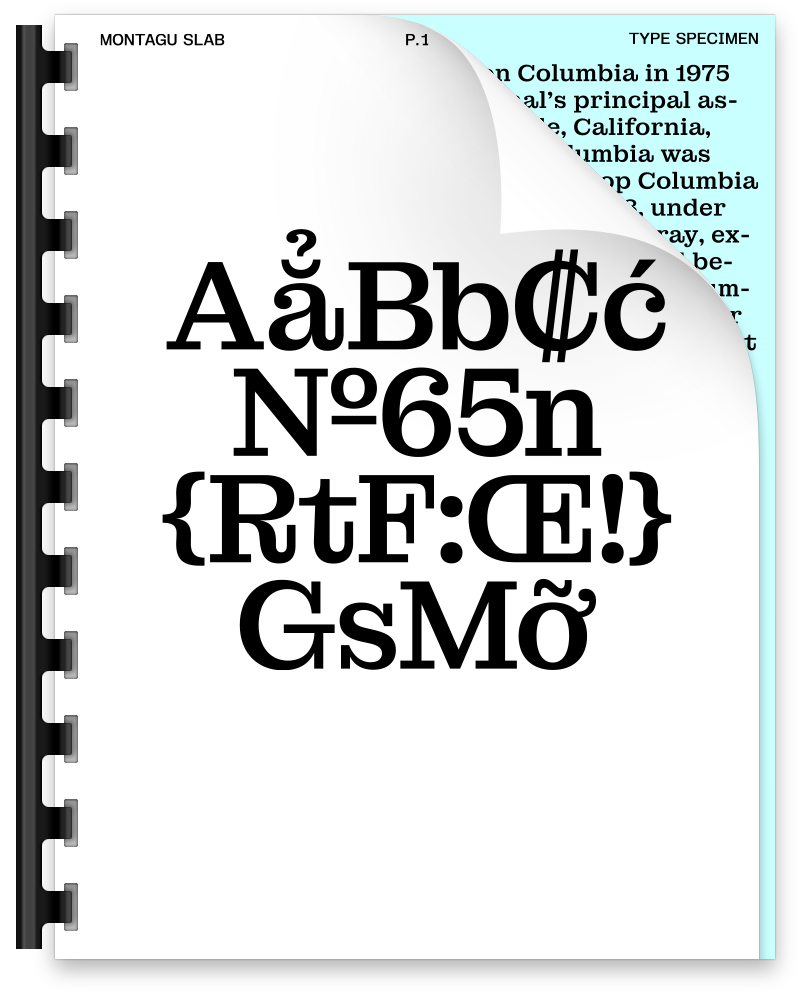
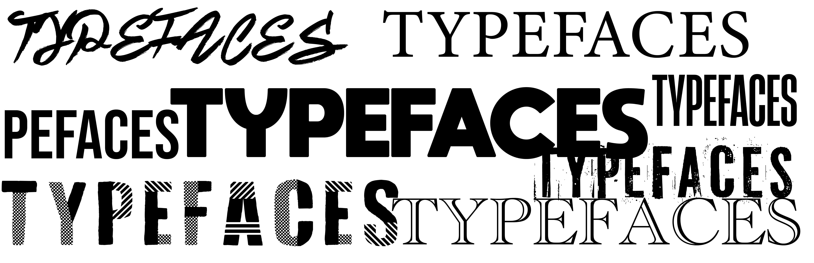
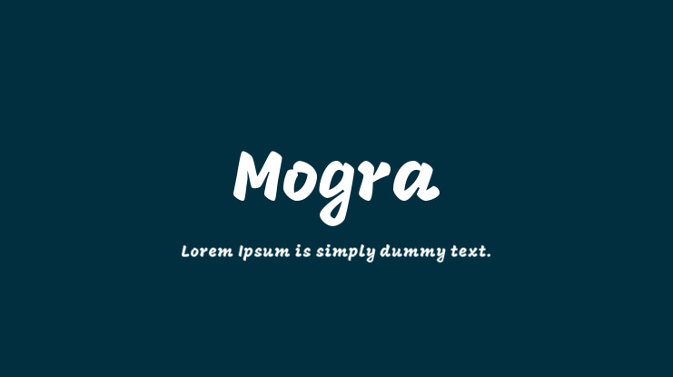
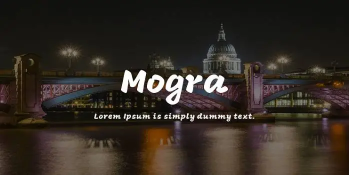
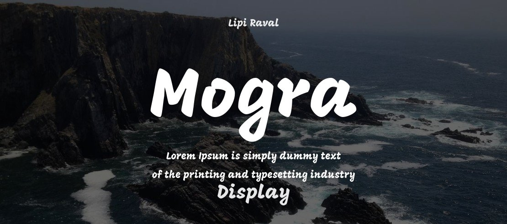

Aa
Montagu Slab
A bold slab serif typeface with a classic structure and a strong, distinctive personality.




Typefaces are an important part in designing. They help establish character and show brand identity all while conveying a message. It is important to have the write fonts and typefaces for your design, or else it can ruin it completely.
A bold slab serif typeface with a classic structure and a strong, distinctive personality.



Montagu Slab is a modern slab-serif display typeface designed by Florian Karsten. Montagu Slab is built as a variable font featuring weight and optical size axes.



Typography can be used in many ways, from large display headlines to small details that help a composition feel complete.